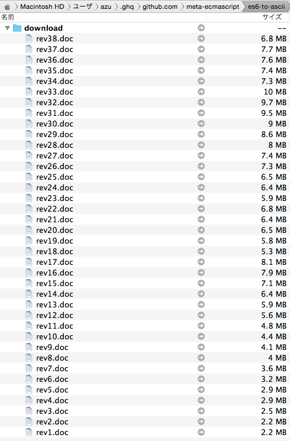
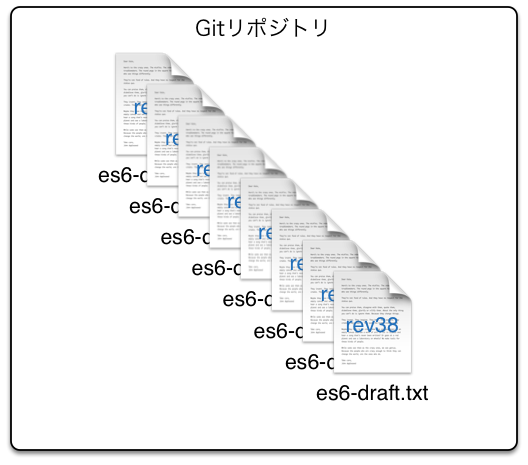
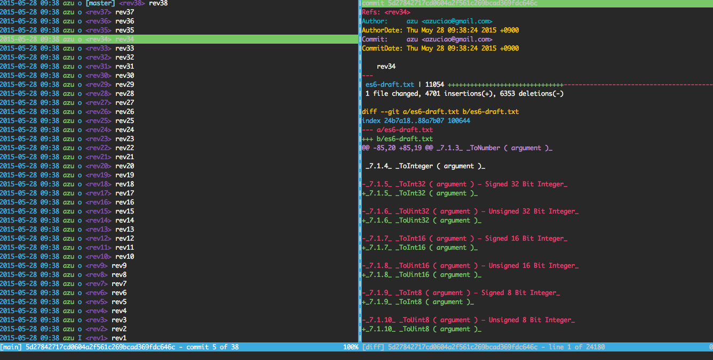
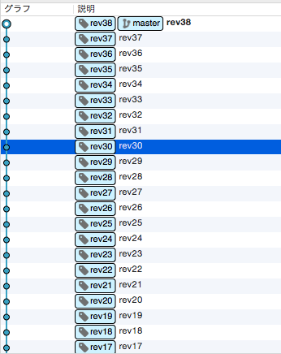
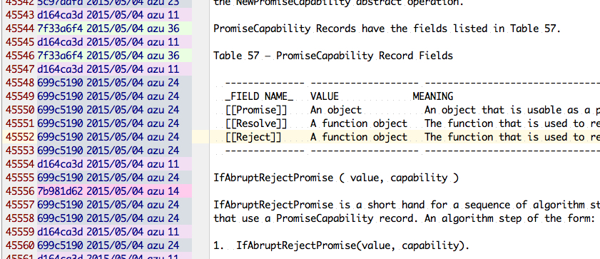
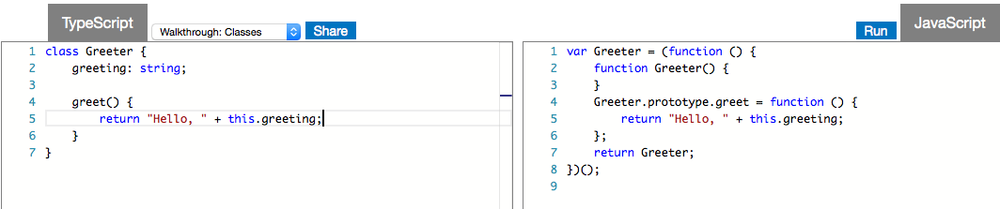
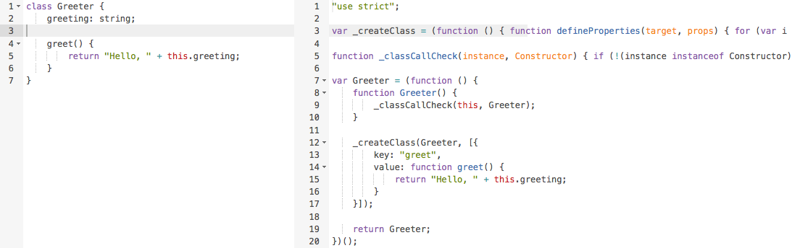
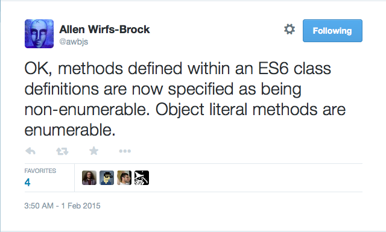

ECMAScript 6 Draft Hisotry Repo
ES6 DraftのGitリポジトリを作る
自己紹介

azu
@azu_re
Web scratch, JSer.info
ECMAScript 6 ドラフト

- Draft Specification for ES.next (Ecma-262 Edition 6)
- Revision 38まである
- doc、pdfで公開されている
- 非公式のHTML版も公開されてる
ECMAScript 6 ドラフトの問題点
- 一般的なバージョン管理がされてない
- Wordの編集履歴とChangeLogのみ
- Revision同士の差分が取得できない
- 例) Rev 16とRev 30を比較できない
ES6ドラフトの差分を見たい
- Gitリポジトリとして更新されていればなー
- Rev毎に変更点がコミットされたものがあれば
- ないなら作ってしまおう !!
- meta-ecmascript/es6-draft-revision
どういうこと?

- ES6ドラフトをRev毎にテキストファイルに変換
- １つのテキストファイルの単一リポジトリとしてES6ドラフトの履歴を表現
- meta-ecmascript/es6-draft-revision

作り方
- ドラフトのdocファイルを全部ダウンロード
- docファイルをテキストに変換する
- GitにRevごとにコミットとして突っ込む
- git log -S -i "search"とかで検索できる!
ドラフトのdocファイルを全部ダウンロード
- ダウンロードするURLの一覧
- meta-ecmascript/es6-spec-changelog
- ダウンロードするツール
- meta-ecmascript/download-es6-spec
docファイルをテキストに変換する
- docファイルを直接テキストに変換は難しい
- doc -> docx -> txt としてやる
- doc から docx への変換を安定してやるにはWordを使うしかない…
- wordで開いてdocxで保存するマクロで変換


GitにRevごとにコミットとする
- pandocでdocx -> txtとして変換
- revごとのテキストファイル作成
- es6-draft.txtにリネーム->コミット->次のRevでes6-draft.txtを上書き...
- 繰り返してGitのコミット積み上げる
完成

meta-ecmascript/es6-draft-revision

(Gitリポジトリにすると)何が良いのか
- テキストファイルだから検索しやすい
- Gitを使った変更履歴の検索パターンが応用できる
- ドラフトのどのバージョンで変更があったのかが追いやすい
- 関連するログを調べて何故そういう変更があったのかを調べるのに役立つ
DEMO
Reflect.constructが何時入ったのかを探してみよう- 26.1.2 Reflect.construct ( target, argumentsList [, newTarget] )
new target+ 内部処理もできるReflrect API
^ git log -S "Reflect.construct"を検索
^ 横断的に検索できる
^ tig grep "Reflect.construct"で検索
^ ,のショートカットで戻っていく
Class - TypeScriptとBabel
- Classで定義したmethodの違い
- TypeScriptはmethodがenumerable
- Babelはmethodがnon-enumerable
- どっちが正しい?
 
ClassMethodはnon-enumerable
- 現在の仕様ではClassのmethodはnon-enumerable
- Babelの方が仕様に沿ってる
- なぜこうした違いが生まれているのかを変更履歴から見る
- DEMO:(やり方はこちら)
^ PropertyDefinitionEvaluationでこの列挙が定義されてる
^ tig grep -i "PropertyDefinitionEvaluation"で現在の仕様を見る
^ bでblameモードに入る
^ ,でコミットを戻って変更を確認できる
^ Rev 26でその変更が入ったことがわかる

コミットを見つけたら
- Rev前後のミーティングノートやMLを探してみる
- ES Discuss
- rwaldron/tc39-notes
- Bugzilla
参考
類似研究
- dspinellis/unix-history-repo
- Unixの歴史のgitレポジトリ
まとめ
- (Gitの)歴史は捏造できる
- Git向けのツールがそのまま転用できる